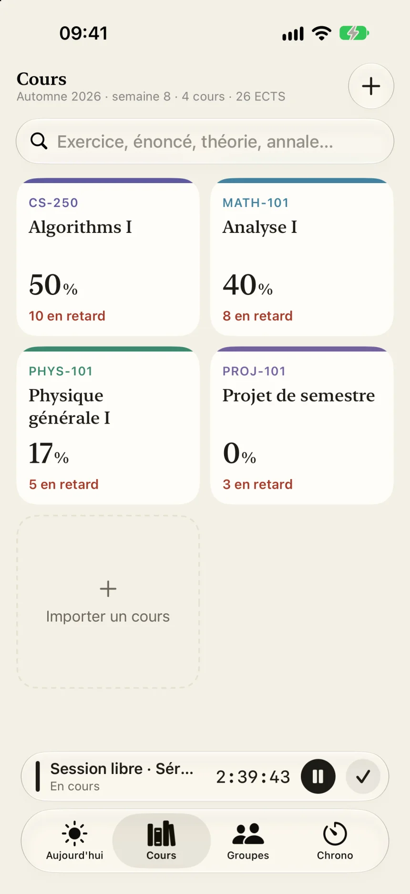
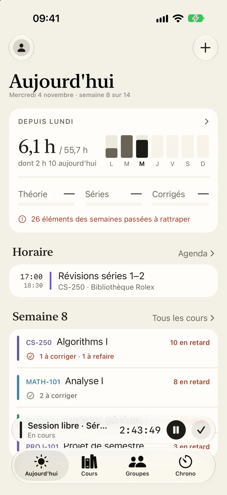
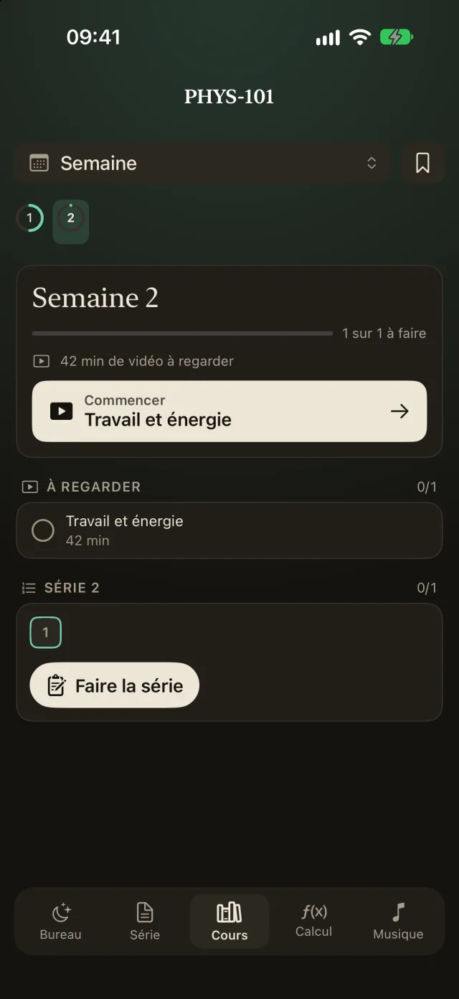
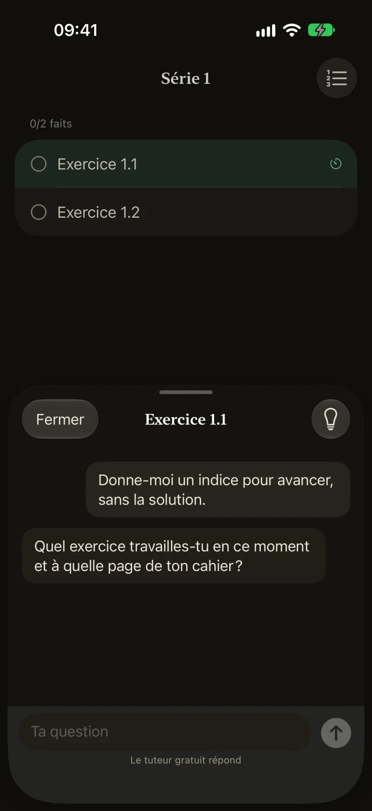

iPhone
Bêta TestFlight, sur demande
Demander l'accès- Écris-nous avec l'adresse de ton identifiant Apple.
- Installe TestFlight depuis l'App Store.
- Ouvre l'invitation reçue et touche « Installer » : les mises à jour arrivent seules.
Tes cours EPFL, posés à plat semaine par semaine.
Gratuit, sans pub. Pas affilié à l'EPFL.
Moodle, Botafogo, Courseware, Ed Discussion, MediaSpace et ton horaire IS-Academia : chaque vidéo, série, corrigé et rendu se pose dans sa semaine. Une série publiée ce soir est là demain matin.
Ton mot de passe se tape sur la page de l'EPFL, jamais dans l'app.
Semaines 1 — 4


Tu choisis ce qui compte : les cours quand tu y étais (« J'y étais » sur l'horaire), les séances d'exercices si tu veux, le chrono toujours. Jamais compté deux fois.
Puis tu compares à la charge que tes crédits ECTS supposent. Les collines de la dalle, ce sont tes semaines lourdes.
Semaine 7 · 12 h
Sur Mac et Windows, le mode étude peut verrouiller tout le reste.
Semaine 9


Qui travaille en ce moment, et sur quoi. Qui en est où, série par série. Une question sur un exercice, chiffrée de bout en bout. Un chrono commun pour faire les pauses ensemble, et les séances prévues dans l'agenda.
Semaine 10
La même app, les mêmes données. La synchronisation est chiffrée sur tes appareils : le serveur ne peut rien lire. Pas de compte obligatoire, pas de pub, pas de traceur.
Ce qui reste sur ton appareil, ce qui en sort
Semaines 12 — 14
Bêta TestFlight, sur demande
Demander l'accèsmacOS 14 ou plus récent
Télécharger pour MacStudyTrack.dmg.Windows 10 et 11, 64 bits
Télécharger pour WindowsStudyTrack-setup.exe.Un problème ? Dans l'app : Réglages › Signaler un problème, ou studytrack@hczr.ch.
In English. StudyTrack is a free app for EPFL students on iPhone, Mac and Windows. It reads your courses (Moodle, Botafogo, Courseware, Ed, IS-Academia) and lays out lectures, exercise sheets and deadlines week by week, counts the hours you actually study, and gives you a focused study desk and study groups. Sync is end-to-end encrypted. Privacy policy